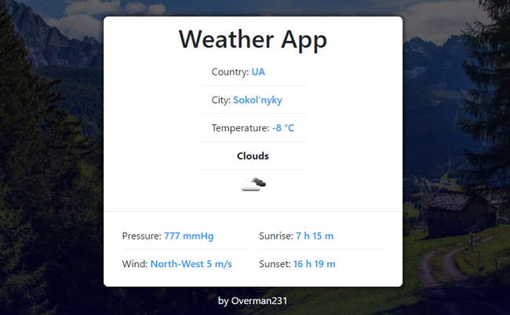

Weather App
codepen.io/Overman231/full/eyKRjVПриложение показывающее погоду в соответствии с вашим местоположением. Выполнено в рамках того же курса.

Начинающий веб-разработчик. При создании сайтов использую такие инструменты: HTML, CSS, JavaScript, фреймворк Bootstrap. В планах углубление знаний о языке программирования JavaScript. Для реализации этой цели на данный момент прохожу курс по фронт-енду от FreeCodeCamp. Также собираюсь освоить NodeJS, React, Sass и Gulp.
Буду рад познакомиться с организаторами данного курса и с его участниками для осуществления ожиданий описанных в пункте "Знания" и для возможных последующих совместных проектов и в общем работы.
Надеюсь преобрести новые знания связанные с веб-разработкой, получить коментарии и советы по поводу применения уже имеющихся знаний.
Ожидаю большое количество практики для структуризации имеющейся теории и той, которую получу во время учёбы в ШРИ.
Также не исключаю вариант устройства на работу в компанию Яндекс, что будет для меня большим достижением и реализацией одной из моих главных целей на ближайшие 10 лет.
Приложение показывающее погоду в соответствии с вашим местоположением. Выполнено в рамках того же курса.